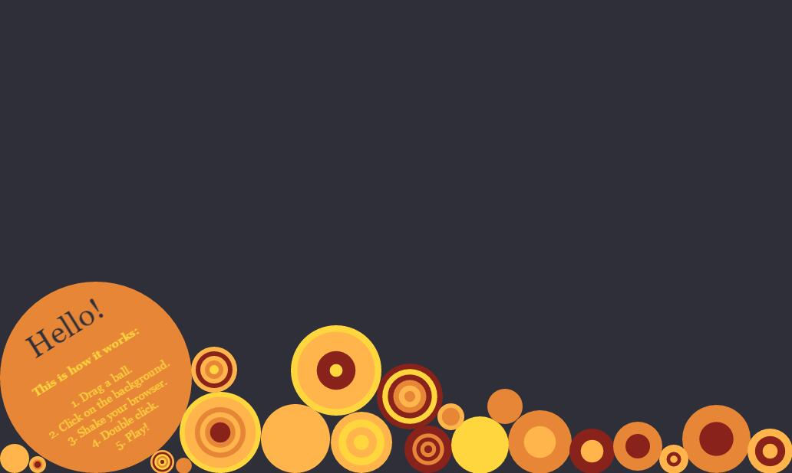
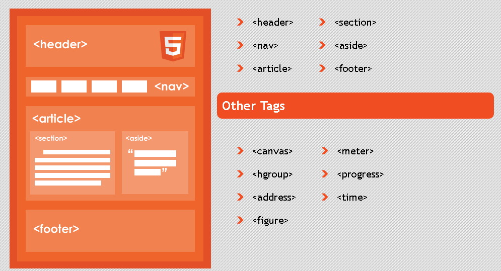

THE END
Thanks for listening!
GETTING STARTED WITH HTML5.
Getting started with html5.
HTML5是一个新的网络标准，仍处于发展阶段,为了取代现有的HTML 4.0.1和XHTML 1.0标准。他希望能够减少互联网富应用（RIA）对Flash，Silverlight，JavaFX等的依赖，并且提供更多能有效增强网络应用的API。
XHTML中DOCTYPE：
<!DOCTYPE html PUBLIC "-//W3C//DTD XHTML 1.0 Transitional//EN" "http://www.w3.org/TR/xhtml1/DTD/xhtml1-transitional.dtd">HTML5中DOCTYPE：
<!DOCTYPE html>XHTML中<html>：
<html xmlns="http://www.w3.org/1999/xhtml" xml:lang="en" lang="en">HTML5中<html>：
<html lang="en">HTML 5 引入新的HTML元素，通过这些元素，开发者可以更细致的描述文档结构，让文档更加易懂，搜索引擎也能更好的理解页面中各部分间的关系，我们也可以更快更准确的搜索到信息。
 HTML 4与 HTML 5HTML 5提供的一些新的标签以及和HTML 4的区别。
| HTML 4 | HTML 5 | 说明 |
|---|---|---|
| div | article | 标签定义外部的内容 |
| div | aside | article 以外的内容，内容应该与 article 的内容相关 |
| -- | figcaption | 定义 figure 元素的标题 |
| dl&h1 | figure | figure与figcaption：figcaption元素为元素组添加标题 |
| div | header | 定义 section 或 document 的页眉 |
| div | footer | 定义 section 或 document 的页脚 |
| div | hgroup | 用于对网页或区段（section）的标题进行组合 |
| div | nav | 定义导航链接的部分 |
| div | section | 定义文档中的节（section、区段） |
| div | time | 定义日期或时间，或者两者 |
其他新入标签：
<audio>、<canvas>、<datalist>、<mark>、<progress>、<source>、<svg>、<video>html5废弃的一些元素：
basefont、big、center、font、s、strike、tt、u移除了对框架的支持，以下元素不会再出现在规范中：
frame、frameset、noframes、acronym（被abbr取代）、applet（被object取代）、dir（被ul取代）
<!DOCTYPE html>
<html lang="zh-CN">
<head>
<title>The frist HTML 5 page</title>
<meta charset="UTF-8">
</head>
<body>
Enter text here.
</body>
</html>
Like this!
简洁Like this!
音频（Audio）和视频（Video）
Audio和Video是首批添加到HTML规范中的标签，他们的加入使得我们可以像插入一张图片那样处理音视频。 Like this!
当前，video 元素支持三种视频格式：
| 格式 | IE | Firefox | Opera | Chrome | Safari |
|---|---|---|---|---|---|
| Ogg | No | 3.5+ | 10.5+ | 5.0+ | No |
| MPEG 4 | 9.0+ | No | No | 5.0+ | 3.0+ |
| WebM | No | 4.0+ | 10.6+ | 6.0+ | No |
Ogg = 带有 Theora 视频编码和 Vorbis 音频编码的 Ogg 文件
MPEG4 = 带有 H.264 视频编码和 AAC 音频编码的 MPEG 4 文件
WebM = 带有 VP8 视频编码和 Vorbis 音频编码的 WebM 文件
HTML 5提供了两种在客户端存储数据的新方法：
之前这些数据都是由Cookie完成，但Cookie有4k大小的限制，而且会随HTTP请求一起被传递，无形中拖慢网速、效率不高。
input标签type属性被赋予更多的类型：
<input type=email >
<input type=url >
<input type=number >
<input type=tel >
<input type=range min=20 max=100 step=2 >
<input type=color value=#ff0000 >
<input type=date >
<input type=time >
<input type=datetime >
<input type=datetime-local >
<input type=month >
<input type=week >
<input type=time >
<input type=datetime >
<input type=datetime-local >
<input type=month >
<input type=week >
<input type=search results=s >
<input type=text required >
<input type=email required pattern=\w+@[a-z0-9]+\.[a-z]+/g
>
...
Like this!
拖拽与拖放（Drap&Drop）与文件处理(File Processing)
过去我们想实现网页中的拖拽效果，基本上都是使用DOM事件中的mousedown、mousemove、mouseup的鼠标事件监听模拟拖拽效果，为了实现实时拖拽，就要不停地获取鼠标坐标、不停地修改元素的位置，代码一大堆，性能却很差。现在有了HTML5原生的Drap&Drop拖拽事件，再结合FileAPI中的FileReader，实现这样的效果就会变得很容易。
Like this!WebSocket
现在很多网站为实现即时通讯，所用技术都是轮询。这种模式需要浏览器不断地向服务器发出请求，然而HTTP请求的header信息非常长，这样会占用很多的带宽和服务器资源。
WebSockets是在一个（TCP）接口进行双向通信技术，能更好地节省服务器资源和带宽。
在WebSocket API中，浏览器和服务器只需要做一个握手动作，然后，浏览器和服务器之间就形成一条快速通道，两者之间直接就可以传送数据。
Canvas画布元素
传统网页，总是使用GIF或JPEG来显示图片，这种图形需要实现画好的“静态”图像，而Canvas则是利用JavaScript的一种会话手段，可以用它画图合成图像或做简单的动画。
Like this!XMLHttpRequest 2
作为XMLHttpRequest的改进版，XMLHttpRequest level 2 在更能上有了很大的改进，支持跨源 XMLHttpRequest和进度事件（Progress Events）。
Thanks for listening!